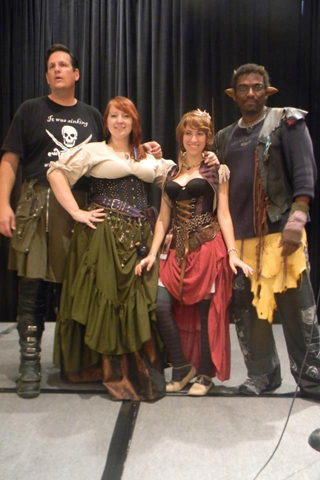

Anomaly Con 3 Guests
Listed Alphabetically By Interest. Jump to: Artists | Authors | Performers
Artist Guests
SPOTLIGHT: Trae Dorn
Trae Dorn, contrary to popular belief (and his continued insistence), is not the Secret King of Finland. He is not an android designed by a top secret Swedish government agency, nor is he responsible for seventeen earthquakes in the last ten years. Trae is, however, the creator of the (very different) webcomics “UnCONventional” and “The Chronicles of Crosarth.” Having working conventions for over fifteen years (and co-founded Wisconsin’s longest running Anime Convention), conventions are in Trae’s blood… metaphorically, not literally — because that would be gross. Trae has funneled this mania into UnCONventional, a twice weekly webcomic based around the staff of a fictional fandom convention. The Chronicles of Crosarth, on the other hand, is a digitally collaged webcomic of steampunk adventure. Set around the fictional nation of Crosarth, it follows the crew of the airship HMS Hummingbird on their adventures. It also features a talking squid, which for reasons unfathomable no one finds abnormal. Trae insists that this is not a sign of insanity.
Chaz Kemp
Chaz Kemp is an award-winning Art Nouveau illustrator from Denver that loves drawing Steampunk and Fantasy images. He perfected his style while studying at the Art Institute of Colorado and has since gone on to work with clients from all over the world. He encourages you to visit and “Like” his Facebook page: www.facebook.com/ChazKempIllustration because his therapist says he needs more friends.
J Zoe Frasure
 J Zoe Frasure began her career as an artist at Walt Disney World in Orlando, FL. Bent on pursuing her career, she returned to Ohio to achieve her art Degree. Eventually, she found her way to Los Angeles, working in the dark side of Hollywood, as a storyboard and concept artist in indie horror on such films as the “Hatchet” movie series and “The Collector.” A diverse artist, Zoe has spent the past 6 years designing collectibles and creating original souvenirs for such notable clients as Disney, Hard Rock Cafe and Sea World. She finds a strange balance between making cute Disney characters by day and planning out slashing people to bits by night.
J Zoe Frasure began her career as an artist at Walt Disney World in Orlando, FL. Bent on pursuing her career, she returned to Ohio to achieve her art Degree. Eventually, she found her way to Los Angeles, working in the dark side of Hollywood, as a storyboard and concept artist in indie horror on such films as the “Hatchet” movie series and “The Collector.” A diverse artist, Zoe has spent the past 6 years designing collectibles and creating original souvenirs for such notable clients as Disney, Hard Rock Cafe and Sea World. She finds a strange balance between making cute Disney characters by day and planning out slashing people to bits by night.
On the lighter side, Zoe has made a reputation in the advertising world creating storyboards for commercials for such names as Cindy Crawford Home, Rooms to Go and Ashley Furniture. Her first book cover, “Tennis Dates” premiered in 2008. Since 2004, Zoe has provided the artwork for the infamous Mr. Bones Pumpkin Patch in Beverly Hills, a mecca for celebrity sitings.http://www.mrbonespumpkinpatch.com/
Film Credit
http://www.imdb.com/name/nm1580281/
Art portfolio
http://onlinegalleries.com.au/users/ZoeEntertainment/
EvilJohn Mays
 John Mays is a special effects makeup artist and props designer currently based out of Colorado. Known in the horror community as “Evil John” for his master gore effects, he is also known in the independent film community for his incredibly realistic handmade props. Most of his props, and all of his makeup prosthetics, are made from scratch lending to the realism of his work. His website is www.ejmfx.com.
John Mays is a special effects makeup artist and props designer currently based out of Colorado. Known in the horror community as “Evil John” for his master gore effects, he is also known in the independent film community for his incredibly realistic handmade props. Most of his props, and all of his makeup prosthetics, are made from scratch lending to the realism of his work. His website is www.ejmfx.com.
His talent in special effects makeup, creature and props design can be seen in such films as ZERO ONE, Red Victoria, Shroud, Killer Ink, The Dead Speak Tales, Sisters Four, Savage Spirit, The 15 Minute Rule, Ruletta Rusica, Crushed, Dementia and Party Girl. He is currently working on “Genesis,” the movie, being filmed in Colorado.
You will often see him at conventions – Mile High Horror Film Festival, Texas Frightmare Weekend, Texas Blood Bath and is a regular fixture at Dallas A-Kon. So, if you are feeling a bit too normal, drop by “The Coroner’s Office” … he can fix that!!
Sarah Menzel
Sarah Menzel has been working as a full time freelance illustrator since graduating from the Savannah College of Art and Design with a B.F.A in Sequential Art and a minor in storyboarding. Her creative influences stem from Japanese and European comics, as well as animation of all kinds. She is currently involved in a variety of projects both personal and commercial, including working as the colorist for Velvet Garden, a graphic novel written by Ryan Davis and drawn by Joe Oliver. Sarah is also the lead art director for Apparatus Publishing, a startup company which aims to deliver speculative fiction stories integrated with sound and image for mobile devices.
Kathryn S. Renta
Kathryn S. Renta is an award winning artist and recent immigrant to Colorado where she survived her first winter–virtually unscathed. She grew up in California with a vivid imagination and unquenchable curiosity. With an equally intense fear of blank pages, she set about to fill up every single one she could. That included sketchbooks, notebooks, journals, random bits of paper and the wall behind her childhood bed.
At the tender age of 21, she broke her mother’s heart by running away to join the the Renaissance Faire, where she learned the incredible craft of mixing entertaining with education. She has since quit the stage to focus more effectively on her art and writing.
In addition to 15+ years as a graphic artist and illustrator, her work includes over a decade of lettering comics for Viz Media, Dark Horse Comics, DC Comics and several independent publishers.
Kathryn is currently writing a Crusades era fantasy story, designing the cover for Penny Dread Tales 3, and illustrating a children’s novel for Sam Knight. You can find her work and musings at http://kathrynrenta.com/ and http://latchkeyartist.com/.
Janet M. Smith
Janet Smith has been a professional designer and costumer for over 40 years (no wonder her hands hurt) getting her apparel design degree from the Fashion Institute of Technology in 1972 and her BA from UNC in theatrical design and technology (with a costume emphasis) in 2005. She learned to sew when she was 10 years old making Barbie clothes and now she costumes clients, actors, grandchildren and her ever busy husband, Terry Kroenung. She prefers designing for classical theatre, renaissance faires, pirates, sci-fi, Steampunk, in other words, anything before 1930 or after 2200.
Stan Yan
Stan Yan grew up in Denver, Colorado and went to school at the University of Colorado in Boulder where he got his bachelor’s degree in accounting. Due to the lack of sex-for-recruiting for accounting students, Yan’s life took the tragic turn into sales for the securities industry, where he wallowed in ethical poverty on-and-off for thirteen years. Yan takes his frustrations out by penning graphic novels such as The Wang. In 2005, Yan gave up on financial security and become a full-time freelance cartoonist, illustrating SubCulture for Ape Entertaiment, creating comic strips for the financial and sales industry, drawing zombie caricatures, and picking up odd illustration and teaching jobs when folks are feeling agonizing pity for him. Stan teaches Summer camps, after school programs, workshops, and helped to develop a degree program in graphic storytelling as an adjunct faculty member at the Community College of Aurora. He writes and color the REVVVelations webstrip. Recent credits include illustrating the comic book “The Adventures of Health Team 4” for Kaiser Permanente; writing Vincent Price Presents #33 for Bluewater Productions; and Yan “Food Fright” for the Melting Pot restaurant. His current project can be found athttp://stanyansblog.blogspot.com/. You can find his homepage at http://www.squidworks.com/Stan
Literary Guests
David Boop
David rejoins Anomaly Con, this year as our official Master of Ceremonies. The Board decided it was time to get someone to officially run the microphone, so here he is. David is a Denver-based single father, returning college student and author. He has one novel, She Murdered Me with Science, and over a twenty short stories to his credit. His specialties include pulp, noir and weird westerns. His first media-tie was released in 2011’s The Green Hornet Casefiles. He has also worked on Fairypunk, the multimedia, steampunk-themed re-envisioning of fairy tales. His personal interests include film, anime, The Blues and Mayan History. You can find out more about David at davidboop.com.
SPOTLIGHT: Gail Carriger
New York Times Bestselling Author Gail Carriger writes to cope with being raised in obscurity by an expatriate Brit and an incurable curmudgeon. She escape small town life and inadvertently acquired several degrees in higher learning, a fondness for cephalopods, and a chronic tea habit.
Her books are urbane fantasies mixed with steampunk comedies of manners. Her debut novel, Soulless, won the ALA’s Alex Award and was nominated for a Compton Crook, Campbell, and a Locus awards. Changeless, Blameless, and Heartless were New York Times Bestsellers. The final book in the series, Timeless (March 2012) will release along side the manga edition of Soulless. The first in her steampunk adventure Finishing School series for young adults,Etiquette & Espionage, and a new Parasol Protectorate Abroad series launch in 2013.
Her other hats (neither pith helmet nor fedora) have included tromping the globe excavating ancient cultures, torturing undergraduates with science, and writing cryptic reviews of YA novels for the Horn Book Guide.
You can find Gail through her agent, Kristin Nelson of Nelson Literary Agency: (http://www.nelsonagency.com/), via her web site http:///www.gailcarriger.com, or over on LiveJournal, Blogspot, Twitter and Facebook.
SPOTLIGHT: S.J. Chambers
S. J. Chambers has published her fiction, poetry, and non-fiction in a variety of venues. Her fiction has appeared in Mungbeing magazine (where her story “Of Parallel and Parcel” was nominated for a Pushcart prize), New Myths, Yankee Pot Roast, and in the World Fantasy nominated Thackery T. Lambshead’s Cabinet of Curiosities (HarperCollins, 2011) and in the forthcoming Starry Wisdom Library (PS Publishing). Her non-fiction has appeared in Tor.com, Fantasy, Bookslut, WeirdFictionReview.com, and Strange Horizons (where she was also the Articles Senior Editor for two years). Her first book, the Hugo and World Fantasy nominated The Steampunk Bible, was co-authored with award-winning Jeff VanderMeer, and they are teaming up again with The Steampunk User’s Manual (Abrams Image) due out in Spring 2014. You can find out more about S. J. at her blog: http://basbleuzombies.tumblr.com/ and The Steampunk Bible at: www.steampunkbible.com.
If you are unfamiliar with S. J.’s work, here are some examples that are available online:
Fiction:
“Of Parallel and Parcel”
“The Lit Monster: Lady Gaga Goes Genre” (April Fool’s joke)
Non-Fiction:
“The Poe Bug”
“Wandering Spirits: Traveling Mary Shelley’s Frankenstein”
Quincy Allen
At an early age Quincy had the intention of becoming an author. Unfortunately, he was waylaid by bandits armed with the age-old adage, “So you wanna be a starving artist the rest of your life?” As a result he ended up a slave to the IT grind for seventeen years, maintaining his sanity with motorcycles and music.
Well into a mid-life career change, he’s been published in multiple anthologies, online and print magazines as well as one omnibus. His steampunk version of Rumpelstiltskin is under contract with Fairy Punk Studios, and he’s written for the Internet radio show RadioSteam. His novel Chemical Burn—a finalist in the Rocky Mountain Writers Association Colorado Gold Writing Contest—was first published in June of 2012, and has been picked up by Fantastic Journeys Publishing.
His new novel Jake Lasater and the Blood Curse of Atheon, will be ready for sale this summer and he’s beginning work on a new off-world steampunk series. He works part-time as a tech-writer to pay his bills and lives in a lovely house that he considers his very own sanctuary.
He’s working the convention circuit when time permits, with appearances scheduled at CoSine, AnomalyCon 3, OsFest 6 and MileHiCon 44 this year as well as a few book signings along the way. All in all, he’s an all-too-busy writer and homebody.
Deb Alverson
Deb Alverson was introduced to science fiction at the age of five, when she learned to read Dr. Seuss. Since then, she has delighted in stories that make the impossible believable. She has been a scribbler of tales much of her life, but only developed the courage to share her scribbles when she joined a science fiction writing club. She wrote stories and eventually became editor of their newsletter. When a new writer joined the group, they began writing stories together and didnt stop until it became a novel. Or two, or three. She has won awards in several internet writing competitions. Deb lives in Aurora, Colorado with her two fast friends, retired racer greyhounds Marissa and Stormy.
Drew Bankston
As a writer, I have published several screenplays, short stories, and poems. Growing up with the influences of Bradbury, Asimov and Clarke, has helped me learn about the science fiction world. As the former Editor of Galactic Alliance magazine, I gained numerous contacts with science fiction actors and writers. Additionally, I was a leading member of a science fiction writing club based in Denver, Colorado for two years. Over the past 8 years, I have owned Star Painter Productions, a video production company. Our new book and the first in our trilogy, “The Eyes of Tokorel: The Color of Emotion” will be available for purchase beginning March 2013.
Dana Bell
Owned by three cats, Dana Bell makes her home in Colorado. The two older males, Sammy and Maximillian starred in her book ‘Winter Awakening’ but under clever disguises so they would not be recognized. Adara has yet to make her debut appearance but her mistress has promised the young female she will have a key role in the next novel.Dana is also the author of a popular cat vampire short story series and has edited two anthologies, ‘Of Fur and Fire’ and ‘Time Traveling Coffers’. She has been nominated for the Rhysling award for her poem ‘Welcomed Cast Outs’ which stars, of course, a cat narrator.
www.fanfiction.net/~dragonlots
www.danabellauthor.blogspot.com
M. H. Boroso
M. H. Boroson’s novel CITY OF STRANGERS won first prize in the Rocky Mountain Fiction Writers 2012 Colorado Gold writing contest. He loves fantasy novels, Buffy the Vampire Slayer, and Asian cinema, and he studied Chinese language and religion at Naropa University and the University of Colorado. His novel CITY OF STRANGERS features a Daoist priestess in 19th-Century San Francisco who uses kung fu, a peachwood sword, spirit magic, and a sarcastic talking eyeball in her pocket to protect Chinatown from monsters out of Asian folklore. Boroson thinks fantasy fiction and cinema could use more ass-kicking female protagonists, more kung fu, more yokai, more kaiju, and more of a willingness to venture outside familiar cultural material for inspiration. His agent is Sandy Lu at the Perkins Literary Agency.
JA Campbell
Julie has been many things over the last few years, from college student, to bookstore clerk and an over the road trucker. She’s worked as a 911 dispatcher and in computer tech support, but through it all she’s been a writer and when she’s not out riding her horse, she can usually be found sitting in front of her computer. She lives in Colorado with her three cats, her vampire-hunting dog in training, Kira, her Irish Sailor and, of course, her horse Sabaska. She is the author of many Vampire and Ghost-Hunting Dog stories and the young adult urban fantasy series The Clanless.
Bill Cherf
As a fifth-grader W.J. Cherf took Sister Mary Stephana’s words to heart and ever since has found the confidence to take on challenges that others shy away from. When confronted with retirement, Cherf said, “Heck, I’ve always wanted to write a book without footnotes, to tell a fascinating tale that is so real that my avid readers would be left puzzled over what was real and what was Memorex.”
To craft such a tale takes wit, a love of science fiction, and above all a deep reverence for ancient history and archaeology. All of these qualities are stitched together beautifully in his books, because Cherf has truly been there, dug that. This is a guy who has even seen the sun rise from atop the Great Pyramid.
At his core Cherf is a teacher and his books do just that. They are a passionate sharing of a much-beloved subject. His readers tend to be those looking for an adventure, who enjoy lively description, an involved plot, and the intellectual satisfaction of learning something new. In short, his trilogy: The Manuscripts of the Richards’ Trust: Bow Tie, Recovery, and Children of Ptah, should be required reading for any class on ancient Egypt.
Consequently, Cherf’s books have been generously reviewed by his readers, who have eagerly shared their joy. For an author, such sentiments are an embarrassment of riches; precious words like honey deliciously drizzled.
Living with his beloved wife Sue, they keep Foxbat 1 out in the garage. They enjoy playing golf, road racing (that’s where Foxbat 1 comes in), jawing around a fire pit on a cool evening while sampling craft beers, and rooting for the Cubs – clearly Cherf is a hopeless romantic.
Come visit www.wjcherf.com and sample FREE chapters and begin following the temporal adventures of Egyptologist Joseph Richards.
Guy Anthony De Marco
Guy Anthony De Marco is a nocturnal award-winning author living in the geographic center of the middle of nowhere. Between writing speculative fiction, brewing more coffee, and wishing the bills and the horrific mortgage would forget how to find him, he ponders how long it would take for a zombie apocalypse to reach his front door. His practical wife, Tonya, trains all of the small pets to trip the incoming hordes and wonders where all the coffee went by the time she wakes up.
Guy is a member of the following organizations: SFWA, HWA, SFPA, ASCAP, RMFW, and hopes to collect the rest of the letters of the alphabet one day.
Sherry D. Ficklin
Sherry is a full time writer from Colorado where she lives with her husband, four kids, two dogs, and a fluctuating number of chickens and house guests. She can often be found browsing her local bookstore with a large white hot chocolate in one hand and a towering stack of books in the other. That is, unless she’s on deadline at which time she, much like the Loch Ness monster, is only seen in blurry photographs. In her spare time Sherry co-hosts Geek Chick Radio and teaches publication and writing classes.
Sherry is the author of over half a dozen YA and paranormal novels, including The Gods of Fate series, The Palmetto Moon series, and Military Brats: After Burn. Her new steampunk/ya series, The Lost Imperials, is under contract with Spencer Hill Press. Book 1, EXTRACTED, will be released on 11/12/13.
You can see more about Sherry on her website www.sherryficklin.com or visit her blog www.sherryficklin.blogspot.com.
Emily France
Emily France is a YA author whose paranormal novel, Little Miss Life, recently won the Rocky Mountain Fiction Writers’ 2012 award for best young adult novel. Before settling in Colorado to write, Emily filled up her resumé with adventures such as graduating from Brown University, working on a dude ranch in Wyoming, being a corporate attorney in Chicago, and getting hopelessly lost in the late-night streets of Kolkata.Emily has an MFA in creative writing. She currently lives in Boulder with her astronomer husband, a shelter dog, and a cat who was recently tiled into the bathroom wall by contractors. (The cat survived!)
Daniel M. Hoyt
Daniel M. Hoyt makes his living as a systems architect for rocket trajectory software, when not writing or managing one of several indie presses. Having been steeped in music from an early age, sometime in his late thirties he reluctantly abandoned his dream of becoming a rock songwriter and turned his attention to a career that isn’t age-discriminatory: fiction writing. Since his first sale to Analog, in which he discovered with a shock that it’s possible to get paid to lie (without getting arrested), Dan has sold several stories to other magazines and anthologies, such as Esther Friesner’s suburban fantasy anthologies, Witch Way to the Mall, Strip Mauled, and Fangs for the Mammaries, and to Mike Brotherton’s groundbreaking NSF-funded online anthology, Diamonds in the Sky. Dan has even crossed over to the dark side of anthology editing with Fate Fantastic (DAW) and Better Off Undead (DAW). Catch up with him at http://www.danielmhoyt.com
Sarah A. Hoyt
 Sarah A. Hoyt has been instructed to say she has never written male adventure or erotica (though the latter is not strictly true, it just was never published) because that’s easier than listing everything she does write. She has published over 21 books in science fiction, fantasy, mystery and historical (one of which is considered romance). She’s also published over a hundred short stories in professional magazines and anthologies. She’s recently started bringing out her short stories under the Goldport Press imprint. She intends to bring out her novel Witchfinder (in the same universe as The Magical British Empire Trilogy) under the same imprint in March. Meanwhile, Baen books will continue publishing her space opera and her Shifters Series set in a Colorado Diner.
Sarah A. Hoyt has been instructed to say she has never written male adventure or erotica (though the latter is not strictly true, it just was never published) because that’s easier than listing everything she does write. She has published over 21 books in science fiction, fantasy, mystery and historical (one of which is considered romance). She’s also published over a hundred short stories in professional magazines and anthologies. She’s recently started bringing out her short stories under the Goldport Press imprint. She intends to bring out her novel Witchfinder (in the same universe as The Magical British Empire Trilogy) under the same imprint in March. Meanwhile, Baen books will continue publishing her space opera and her Shifters Series set in a Colorado Diner.
Robert Hoyt
Robert Hoyt is a Premedical Student living in Colorado. Starting with his first publication at the age of 14 he has written an array of stories, both novels, including Cat’s Paw, and short stories, including Bite One Get One Free. He also writes and draws the webcomic Ninja Nun and keeps his four cats entertained.
Sam Knight
A Colorado native, Sam Knight spent ten years in California’s wine country before returning to the Rockies. When asked if he misses California, he gets a wistful look in his eyes and replies he misses the green mountains in the winter, but he is glad to be back home. Among other things, he is the author of A Whiskey Jack in a Murder of Crows, his new thriller novel which will come into being right here before your very eyes at AnomalyCon, as well as Captain Samjack’s Terror Emporium, one of the Steampunk stories in Penny Dread Tales Volume Three, also coming to life here at AnomalyCon.
A stay-at-home father, Sam attempts to be a full-time writer, but there are just so many hours left in a day after kids. Once upon a time, he was known to quote books the way some people quote movies, but now he claims having a family has made him forgetful, as a survival adaptation. He can be found at SamKnight.com and contacted at Sam@samknight.com
Terry Kroenung
Terry Kroenung teaches Bartitsu, the mixed martial art of the late Victorian era that precipitated the dastardly Professor Moriarty to his well-earned doom. When not employing bumbershoots and savate kicks to dispatch ruffians, he writes snarky fantasy novels such as Brimstone and Lily and Jasper’s Foul Tongue. Book 3 in the series, Jasper’s Magick Corset, will be published in May and features weaponry devised by Captain Nemo. Paragon of the Eccentric, his Steampunk prequel to War of the Worlds with a James Bond twist, is languishing on an editor’s desk at Tor.
David B. Riley
David B. Riley is an active member of the HWA and the author of 6 novels and 100 short stories, He has edited six anthologies and Science Fiction Trails, an annual magazine which is now in its eighth year.
Personal blog:
http://sftrails.blogspot.com/
Business website:
www.sciencefictiontrails.com
Mark Stone
Born in Helsinki, Finland (The Land of the Uncommonly Stubborn), Mark Everett Stone arrived in the U.S. at a young age and promptly dove into the world of the fantastic. Starting at age seven with the Iliad and the Odyssey, he went on to consume every scrap of Norse Mythology he could get his grubby little paws on. At age thirteen he graduated to Tolkien and Heinlein, building up a book collection that soon rivaled the local public library’s.
In college Mark majored in Journalism and minored in English. The newspaper business wasn’t for him, so he did what every good writer does: find work in a wide variety of fields that included catering, bartending, and restaurant management. After getting married, he sold Hyundais (before they became popular) and, because he lives in Colorado, Subarus. Eventually he matured enough to be able to sit down and just write.
Currently Mark is working on his newest novel “Chicago: The Windigo City” and has two more coming out very soon: “I left my Haunt in San Francisco” and “The Judas Line”. Both from Camel Press. Recently, he has been featured in the Arts and Entertainment section of the Denver Post.
Carrie Vaughn
Carrie Vaughn is the author of fourteen novels, including the bestselling Kitty Norville urban fantasy series, and over fifty short stories in various genres, because she just can’t stick to one thing, because that would be boring. She’s been nominated for a Hugo Award, is a graduate of the Odyssey Fantasy Writing Workshop, and has a masters degree in English literature. She’s studied Victorian pulp fiction, makes costumes in her spare time, and generally collects more hobbies than she knows what to do with. She lives in Colorado, and you can visit her at www.carrievaughn.com.
Peter J. Wacks
Peter J. Wacks, creative director and writer for the steampunk project www.Fairypunkstories.com, was born in California sometime during 1976. Maybe. It was a good year to allegedly be born in. He has always been amazed and fascinated by both writing and the world in general, and has worked in everything from waiting tables to designing games.
Throughout the course of his life, he has hitchhiked across the States and backpacked across Europe on the Eurail. He likes reading, watching movies, playing video games, and playing tabletop games. He also studies martial arts and philosophy. Just in case you were wondering, he loves strawberry daiquiris, and you are welcome to mail him one (can you tell he likes his postman?). His relevant website is www.PeterJWacks.com
Gary Wilson
 Gary Wilson grew up in the town of Ogdensburg, New Jersey. He graduated from Sussex Vo-Tech in 1981, majoring in Commercial Art and photography. He enlisted in the Army, serving for three years. Wilson used his military experience to glimpse into the future of the military in the “Defense Force” series.
Gary Wilson grew up in the town of Ogdensburg, New Jersey. He graduated from Sussex Vo-Tech in 1981, majoring in Commercial Art and photography. He enlisted in the Army, serving for three years. Wilson used his military experience to glimpse into the future of the military in the “Defense Force” series.
In his first book The Triangle, the United States faces the threat of a “dirty bomb,” Major Tucker and the 27th Air Wing of the American Defense Force is deployed to prevent the attack. While locked in combat over the Bermuda Triangle, the combatants begin to disappear into thin air. The former enemies are forced to rely on each other as they face unfathomable obstacles.
He is currently working on two novels: One a Southwest paranormal novel: US Marshals Division Two- Book: One” Zompire’s curse. A US Marshal whose wife has been cursed by a voodoo priestess as revenge for killing her son. So the Marshal has to not only stop the priestess, he has to save the wife from the curse.
The second is a Southwest Steam punk novel Marshal Keller and the Black heart gang. The town of Palomas Springs is under siege by a ruthless killer named Frank “Blackheart” Jordan. They hire former US Marshal Jacob Keller and his associate Professor Higgstrom, whose inventions include a steam powered war wagon, a wireless communications system and an electrified fence. Will they succeed or will Jordan and his gang prevail?
Performance Guests
SPOTLIGHT: Jon Magnificent
Jon Magnificent
Time-lord.
Airship Captain.
Sword For Hire.
Musician.
Has been seen on Americas Got Talent Season 6, nominated twice on the 2009 GRAMMY Ballot, several Hollywood Red Carpets for winning awards for Orchestral Composer of the Year (2008), Rock Album of the Year (2010), Rock Artist of the Year (2011) and International Steampunk Band of the Year (2011), nominated for Male Vocalist of the Year and Rock Album of the Year (2012) at the Los Angeles Music Awards, and he can also be seen in the 2013 release of hard cover book International Steampunk Fashions by Victoriana Lady Lisa.
www.JonMagnificent.com
www.facebook.com/MagnificentFans
Echoes of Orpheus
Echoes of Orpheus is a recently formed band branching out into the world of alternative rock. The band currently boasts Requiem (vocals), Kyra Connolly (vocals and guitar), Amity Rose (violin, keyboard and harmonies) and as a special one-time treat, Dr. Absynth, our official music arranger who will be joining us on stage for this show,. They are in the process of creating their first album and are thoroughly excited to be here at Anomaly Con!
Denver Diamond Dolls
The Denver Diamond Dolls dance troupe is an all-female ensemble from Denver, Colorado, dedicated to celebrating and empowering women through dance. Run by Becky Vigil, the group was formed in January of 2011. All women are welcome to join! For more info:
Email: denverdiamonddolls@gmail.com
Website: http://www.denverdiamonddolls.com
Facebook: https://www.facebook.com/denverdiamonddolls
Upcoming: RockyMountainGirlJam.com, May 10-12, 2013
Pandora Celtica
We are Pandora Celtica, a dark faerie Celtic acappella band from the land of dreams and myth. The Queens and Kings of the Fae have ordered the creation of our band that we may be a beacon of magic and high art in the mundane realms, both for the mortals and for you, our fellow Bright Beings, who make your home here. Joining us for the third year by popular demand–Pandora Celtica!
Plasmacrash
Started at the end of the 2005 Colorado Dark Arts Festival, Plasmacrash was formed by college radio DJ’s Asbestos (then known as Big Tim) and Rivet. Over the years the band has refined their sound and filled out their lineup, to become the band they are today.
Plasmacrash have rattled the walls of venues all over Colorado, including the famous Aggie Theatre in Fort Collins. The band is always looking to conquer new territory with their “Music for the Post-Apocalypse” and is always looking to play shows locally and abroad. In addition to headlining several their own shows, they have also shared the stage with several national acts including Roughhausen, Slick Idiot, Cynergy 67, and Babyland.
The Silent Still
 Progressive Hard Rock band, The Silent Still, has positioned themselves as the public face of The Silent Still Society in the digital age. They paint a tapestry of creativity that has been compared to if Tool, 30 Seconds to Mars, Chevelle, and Nine Inch Nails were crossed with Edgar Allan Poe, H.P. Lovecraft, and Neil Gaiman in a Neo-Victorian World. The band has successfully embodied in music, art, and storytelling, The Silent Still Society’s rich history of creative expression and helping people break free from their personal Hells and live to their full potential, from the Society’s amazing stories, to their work in creative expression and personal growth.
Progressive Hard Rock band, The Silent Still, has positioned themselves as the public face of The Silent Still Society in the digital age. They paint a tapestry of creativity that has been compared to if Tool, 30 Seconds to Mars, Chevelle, and Nine Inch Nails were crossed with Edgar Allan Poe, H.P. Lovecraft, and Neil Gaiman in a Neo-Victorian World. The band has successfully embodied in music, art, and storytelling, The Silent Still Society’s rich history of creative expression and helping people break free from their personal Hells and live to their full potential, from the Society’s amazing stories, to their work in creative expression and personal growth.
White Collar Sideshow
 By combining new music and an original film-White Collar Sideshow brings you a provocative live performance you will never forget!
By combining new music and an original film-White Collar Sideshow brings you a provocative live performance you will never forget!
“One part band & one part film, like watching a movie with a live soundtrack!” “A wall of insanity with a modern vaudeville twist; a very fine spectacle to say the least!!”
From the mind of T.D. Benton, alongside Travis Joiner (777 productions) and master producer/engineer Chris Baseford (Rob Zombie, Tommy Lee, John 5) a new chapter of our life begins with our first full-length recording, full-feature film and new performance, titled “The WitcHunt”
Based on actual events, we take you on an innovative-thrilling and stimulating roller coaster ride through life & tragedy.
A crash course through strange & unusual events that could occur at any place and time, if we allow it.
T.D. Benton (vocals, drums) brings back the creative and clever players:
…the brutal Herr Schwein (drums)
…the always creepy Leech (perc)
…and the lovely but mysterious Faceless Woman (bass)
Together these characters bring you a chilling and somewhat haunting performance on the soul. Before we point our fingers at each other, what is it that consumes our hearts and minds? What are the vices that haunt and torture our lives?
Traveling the arterial highways full of passion and purpose! Looking for the amazing and spectacular, the loving and orgiving. Searching for faith and the unknown.
Rebuilding our minds, and burning our fossil fuel trying to figure out how to exemplify true life, our gypsy journey starts once again! White Collar Sideshow.
The Vagabond Misfits
The Vagabond Misfits are a Steampunk inspired troupe with burlesque, vaudevillian, musicians, belly dancers, and many other styles of talent. We present the classy world of the performing arts in all eras of time. The Vagabond Misfits celebrate men and woman of all races, shapes, and sizes. We recognize that everyone has their own unique and individual beauty. No matter where they are from, what their clothing size is, or their choice in life style, we are all Misfits that need to stand up and be proud!